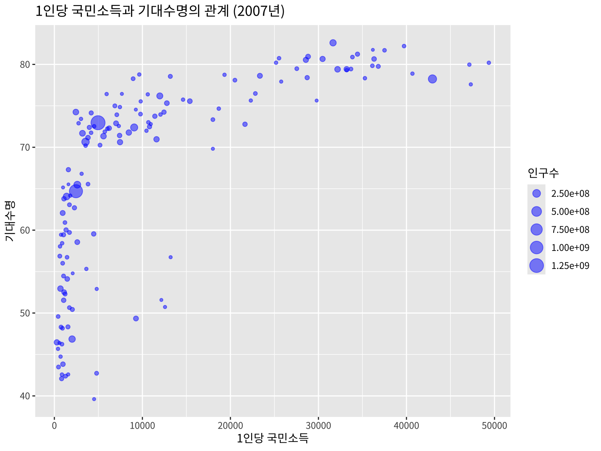
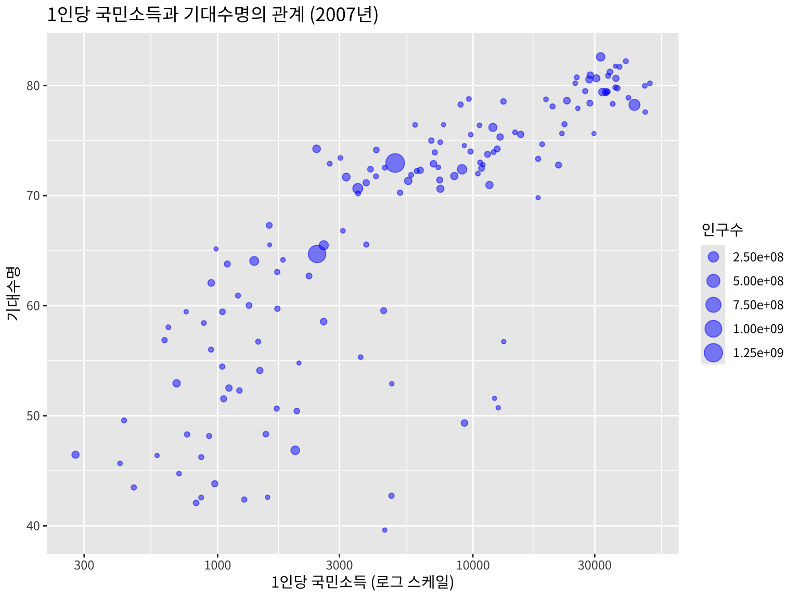
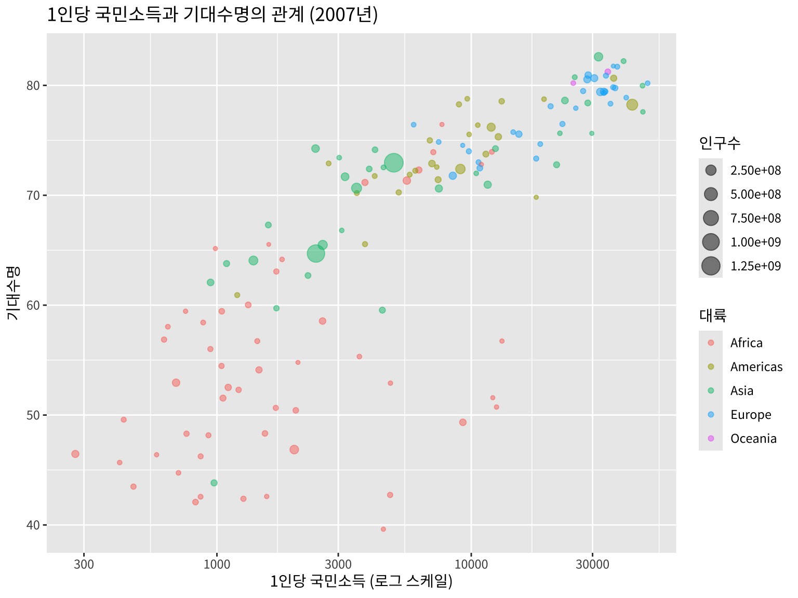
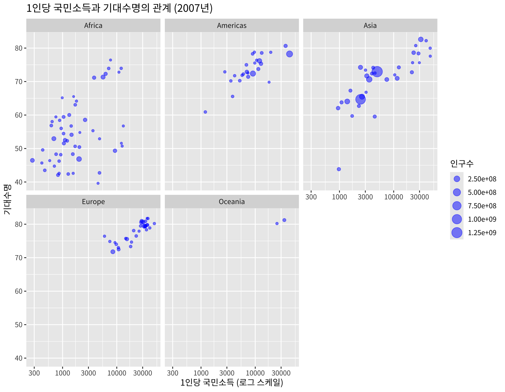
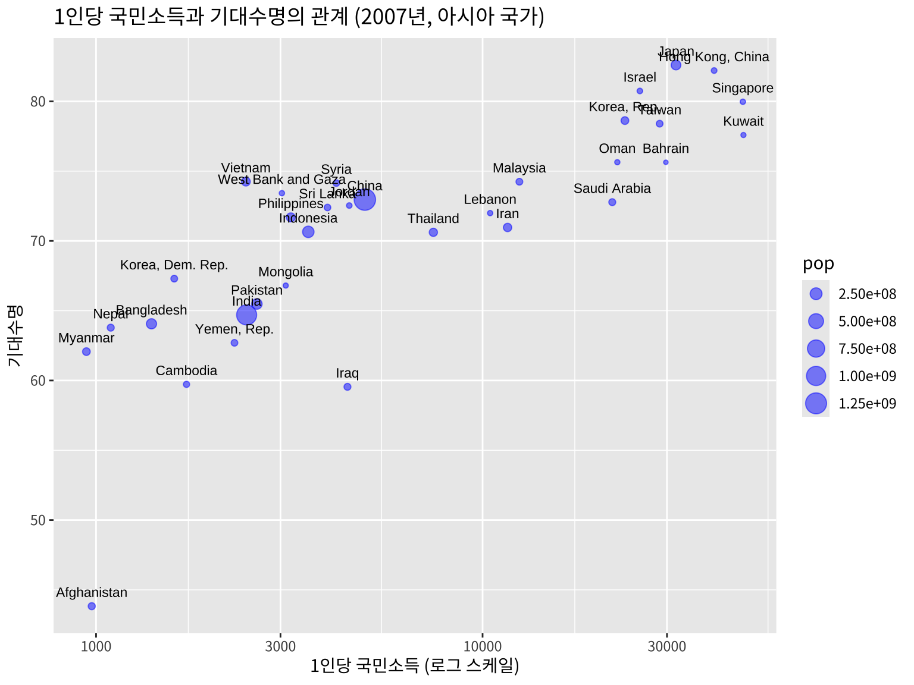
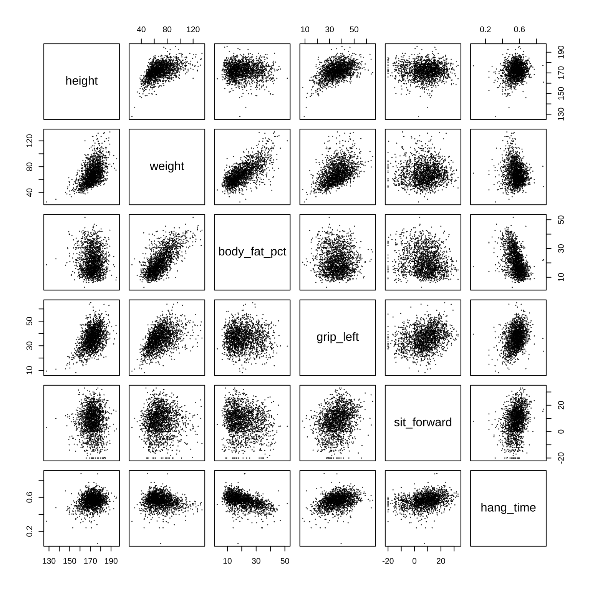
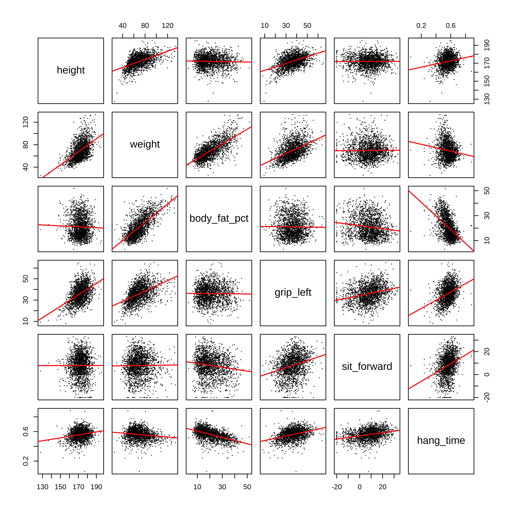
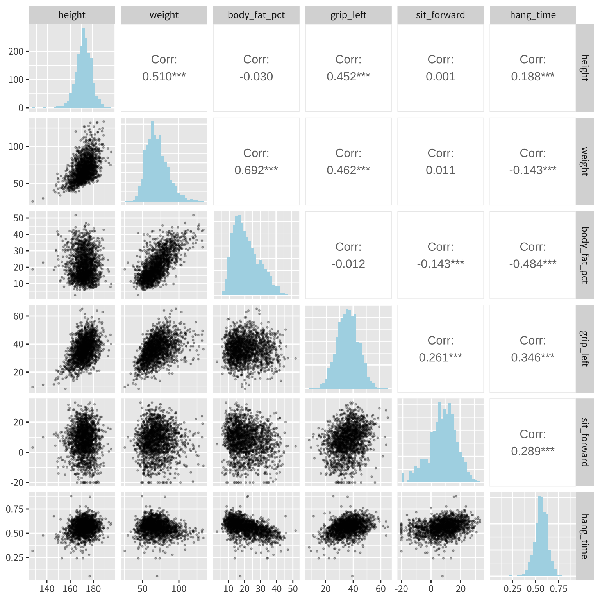
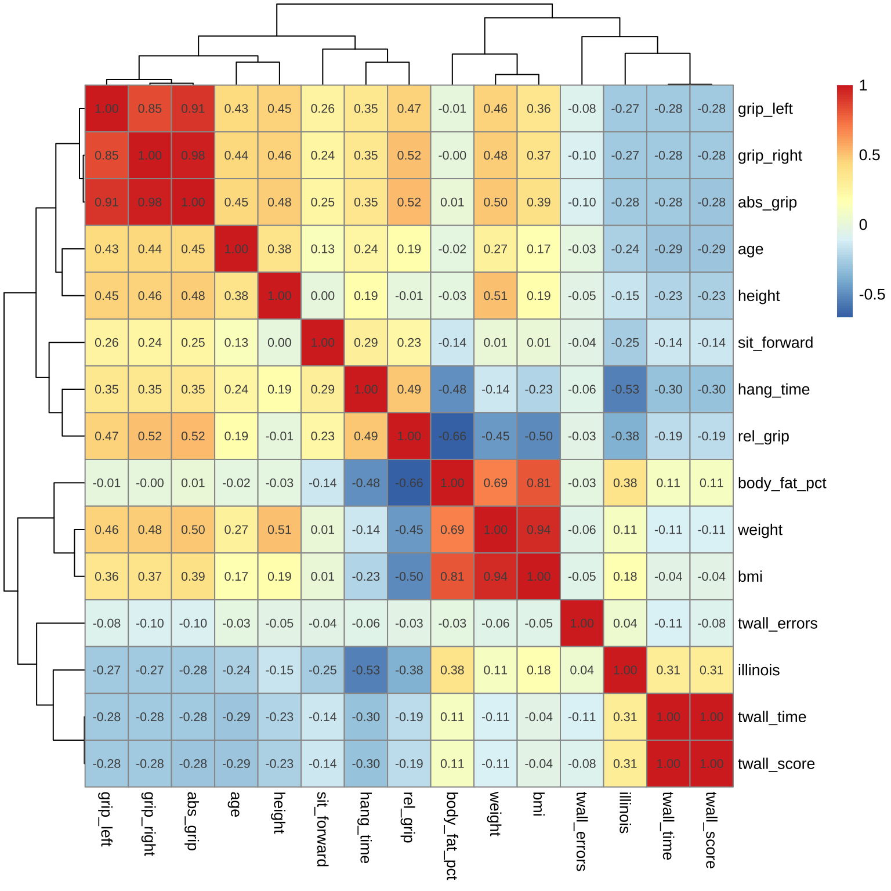

library(tidyverse)
library(here)
library(knitr)
library(rmarkdown)
library(kableExtra)
library(flextable)
library(gapminder)
library(GGally)
#아래 3 문장은 한글을 포함한 ggplot 그림이 포함된 HTML, PDF로 만드는 경우 사용
library(showtext)
#font_add_google("Nanum Pen Script", "gl")
font_add_google(name = "Noto Sans KR", family = "noto")
showtext_auto()2 다변량 자료의 시각화
일반적으로 많이 사용하는 회귀모형(regression model) 은 반응변수와 이에 영향을 주는 설명변수들의 관계를 분석하는 모형이다. 따라서 주로 회귀모형에서 시각화 방법은 반응변수와 설명변수의 관계를 나타내는 그림이며 주로 2개의 변수의 관계를 파악하는 산점도 그림 (scatter plot) 이 많이 사용된다.
다변량 분석은 여러 개의 확률 변수들의 관계를 분석하는 통계 기법이다. 회귀모형과 다른 점은 주로 예측에 관심이 있는 반응변수가 없는 것이며 따라서 분석의 특성상 3개 이상의 변수의 관계를 한 그림에 시각화하는 방밥이 필요하다.
이 장에서는 다변량 분석에서 여러 개의 변수들의 관계를 동시에 시각화 방법들을 알아보려고 한다.
2.1 산점도 그림
앞에서 언급한 것과 같이 3개의 변수를 산점도에 나타내려면 x 축, y 축 과 더불어서 점의 특성(색깔, 모양 등)을 이용할 수 있다.
R 패키지 gapminder 에 포함된 gapminder 데이터는 전 세계 여러 국가의 경제, 보건 지표를 연도별로 기록한 공개 자료이다. 원본은 [Gapminder 재단]{https://www.gapminder.org/} 에서 제공한다. gapminder 데이터는 1952년부터 2007년까지 5년 단위로 측정한 각 국가별 경제 수준과 건강 상태를 시계열로 비교 가능하게 정리한 자료이다.
| 변수명 | 설명 |
|---|---|
country |
국가 이름 |
continent |
대륙 이름 |
year |
연도 |
lifeExp |
기대수명 (average life expectancy) |
pop |
인구 (population) |
gdpPercap |
1인당 국민소득 (gross domestic product per capita) |
head(gapminder::gapminder)# A tibble: 6 × 6
country continent year lifeExp pop gdpPercap
<fct> <fct> <int> <dbl> <int> <dbl>
1 Afghanistan Asia 1952 28.8 8425333 779.
2 Afghanistan Asia 1957 30.3 9240934 821.
3 Afghanistan Asia 1962 32.0 10267083 853.
4 Afghanistan Asia 1967 34.0 11537966 836.
5 Afghanistan Asia 1972 36.1 13079460 740.
6 Afghanistan Asia 1977 38.4 14880372 786.이제 gapminder 데이터에서 2007년 자료를 이용하여 1인당 국민소득(gdpPercap)과 기대수명(lifeExp)의 관계를 산점도로 나타내고, 대륙(continent)에 따라 점의 크기로 다르게 나타내는 그림을 그려보자. 이렇게 점의 크기를 변수의 값에 따라 변하는 산점도를 버블 차트(bubble chart) 라고 한다.
gapminder::gapminder %>%
filter(year == 2007) %>%
ggplot(aes(x = gdpPercap, y = lifeExp, size=pop)) +
geom_point(alpha = 0.5, color="blue") +
labs(title = "1인당 국민소득과 기대수명의 관계 (2007년)",
x = "1인당 국민소득",
y = "기대수명",
size = "인구수") +
theme(text = element_text(family = "noto")) # 한글 폰트 설정(lib(showtext) 패키지 필요)
위의 그림을 보면 1인당 국민소득과 기대수명의 관계가 선형적이지 않음을 알 수 있다. 따라서 x 축을 로그 스케일로 변환하여 다시 그려보자.
gapminder::gapminder %>%
filter(year == 2007) %>%
ggplot(aes(x = gdpPercap, y = lifeExp, size=pop)) +
geom_point(alpha = 0.5, color="blue") + # alpha는 점의 투명도
scale_x_log10() + # x축을 로그 스케일로 변환
labs(title = "1인당 국민소득과 기대수명의 관계 (2007년)",
x = "1인당 국민소득 (로그 스케일)",
y = "기대수명",
size = "인구수") +
theme(text = element_text(family = "noto"))
위의 그림에서 나라가 속한 대륙에 따라 점의 색깔을 다르게 나타내어 보자. 많은 경우 자료는 특정 그룹별로 분석하는 경우가 많기 떄문에 그룹을 시각적으로 나타내는 것이 중요하다.
gapminder::gapminder %>%
filter(year == 2007) %>%
ggplot(aes(x = gdpPercap, y = lifeExp, size=pop, color=continent)) +
geom_point(alpha = 0.5) +
scale_x_log10() + # x축을 로그 스케일로 변환
labs(title = "1인당 국민소득과 기대수명의 관계 (2007년)",
x = "1인당 국민소득 (로그 스케일)",
y = "기대수명",
size = "인구수",
color = "대륙") +
theme(text = element_text(family = "noto"))
이렇게 그룹화하여 시각화 하는 경우 그룹마다 산점도를 따로 나타내는 방법으로 facet 기능을 사용할 수 있다. facet 기능은 ggplot2 패키지에서 제공하는 기능으로 facet_wrap() 함수와 facet_grid() 함수가 있다.
gapminder::gapminder %>%
filter(year == 2007) %>%
ggplot(aes(x = gdpPercap, y = lifeExp, size=pop)) +
geom_point(alpha = 0.5, color="blue") +
scale_x_log10() +
labs(title = "1인당 국민소득과 기대수명의 관계 (2007년)",
x = "1인당 국민소득 (로그 스케일)",
y = "기대수명",
size = "인구수") +
facet_wrap(~ continent) + # 대륙별로 산점도 따로 표시
theme(text = element_text(family = "noto"))
위의 그림에서 아시아에 속한 나라들만 선택해서 점의 크기를 인구에 비례하게 하고 또한 나라의 이름을 표시해보자.
gapminder::gapminder %>%
filter(year == 2007, continent == "Asia") %>%
ggplot(aes(x = gdpPercap, y = lifeExp, size=pop, label=country)) +
geom_point(alpha = 0.5, color="blue") +
geom_text(vjust = -1, size=3) + # 나라 이름 표시
scale_x_log10() + # x축을 로그 스케일로 변환
labs(title = "1인당 국민소득과 기대수명의 관계 (2007년, 아시아 국가)",
x = "1인당 국민소득 (로그 스케일)",
y = "기대수명",
color = "대륙") +
theme(text = element_text(family = "noto"))
2.2 상관계수 행렬
다변량 분석에서 상관계수는 여러 개의 변수들의 관계를 파악하는 가장 기본적인 통계량으로서 시각화를 이용하면 더 쉽게 이해할 수 있다.
상관계수 행렬(correlation matrix)은 여러 변수들 간의 상관계수를 한눈에 볼 수 있도록 정리한 그림이다. 상관계수 행렬을 시각화하는 방법으로는 히트맵(heatmap)이나 페어 플롯(pair plot) 등이 있다.
상관계수 행렬에 대한 예제는 앞 장에서 살펴본 국민체력100 자료를 이용하고자 한다.
먼저 가장 감단한 방법인 pair() 함수를 이용하여 페어 플롯을 그려보자. pair() 함수는 R에 기본으로 포함된 함수로서 여러 변수들 간의 산점도와 히스토그램을 한눈에 볼 수 있도록 그려준다.
load(here("data", "physical100.RData"))
# 국민체력100 자료에서 남자만 선택하여 데이터프레임 df 생성
df <- physical100_df %>%
filter(sex == "남성") %>%
select(height, weight, body_fat_pct, grip_left, sit_forward,hang_time)
# pair() 함수를 이용하여 상관계수 행렬 그리기
pairs(df, pch=19, cex=0.1)
위와 같은 상관계수 산점도 행렬에 다음과 같이 회귀 직선을 추가하여 변수들 간의 관계를 더 명확히 나타낼 수 있다. 다음 코드는 panel 인수를 이용하여 각 산점도에 회귀 직선을 추가하는 방법을 보여준다.
pairs(
df,
panel = function(x, y) {
points(x, y, pch=19, cex=0.1)
abline(lm(y ~ x), col = "red", lwd = 1.5) # 선형회귀 직선
}
)
위의 상관계수 행렬 그림에 좀 더 유용한 정보를 추가하는 다양한 방법들이 있다. 예를 들어, GGally 패키지의 ggpairs() 함수를 이용하면 상관계수 행렬에 상관계수 값과 각 변수에 대한 히스토그램을 추가하여 볼수 있다.
ggpairs(df,
upper = list(continuous = wrap("cor", size = 4)), # 상관계수 표시
lower = list(continuous = wrap("points", alpha=0.3, size=0.5)), # 산점도
diag = list(continuous = wrap("barDiag", fill="lightblue"))) + # 히스토그램
theme(text = element_text(family = "noto"))
최근에는 상관계수 행렬을 히트맵(heatmap)으로 나타내기도 한다. 히트맵은 색깔로 값의 크기를 나타내는 그림으로서 상관계수 행렬을 히트맵으로 나타내면 변수들 간의 관계를 쉽게 파악할 수 있다.
특히, 변수의 개수가 매우 많은 경우 산점도를 이용한 상관계수 행렬은 시각적으로 분석이 어렵기 때문에 히트맵으로 나타내는 것이 더 유용할 수 있다. 패키지 pheatmap 의 pheatmap() 함수를 이용하여 상관계수 행렬을 히트맵으로 나타내보자. pheatmap() 함수의 유용한 점은 상관계수가 큰 변수끼리 군집화(clustering)하여 시각화할 수 있다는 점이다
자료는 국민체력100 자료에서 남자에 대한 모든 변수를 이용한 자료를 이용한다.
# 국민체력100 자료에서 남자만 선택하여 데이터프레임 df 생성
df <- physical100_df %>%
filter(sex == "남성") %>%
select(-sex)
# 상관계수 행렬 계산
cor_mat <- cor(df, use="pairwise.complete.obs") # 결측치가 있는 경우 pairwise로 계산
# 히트맵 그리기
pheatmap::pheatmap(cor_mat, display_numbers = TRUE, number_format = "%.2f")